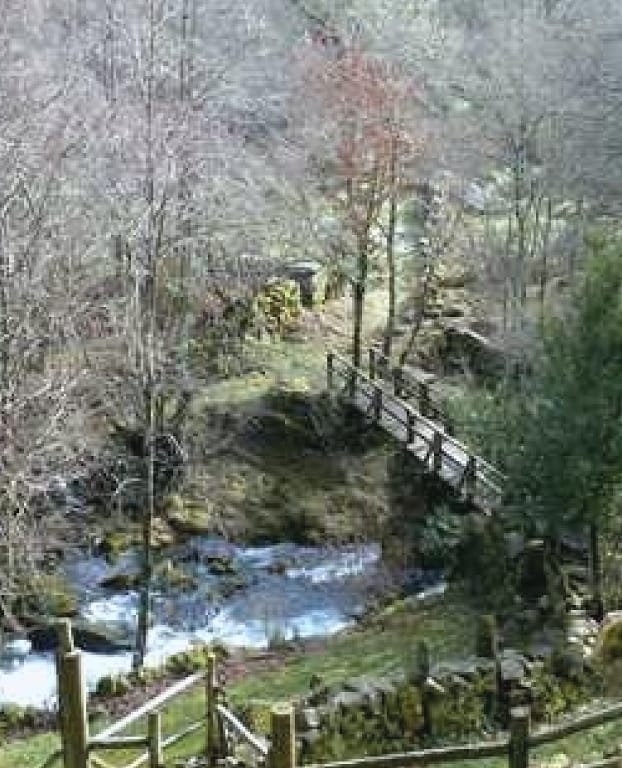
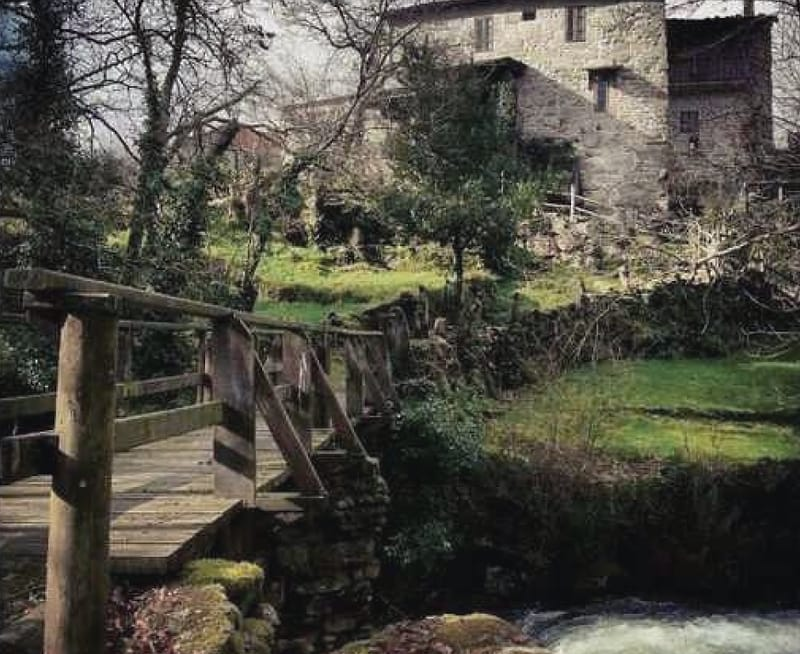

Magros · Beariz · Ourense
La casa de piedra a la orilla del río de Magros
Casa entera para seis · tres dormitorios con baño · Beariz, Ourense

La casa en cifras
Una casa de aldea, entera para vosotros
- hacia1800Casa de aldea de granito, con tejado de losa de pizarra
- 1999Restaurada entera
- 6personas como máximo: la casa se alquila entera
- 3dormitorios, cada uno con su baño completo
- en la orillael jardín, junto al río
«Una casa de piedra cerca del río donde podréis disfrutar de la naturaleza y relajaros […]. Se trata de una casa del siglo XIX pero totalmente rehabilitada y adaptada a las necesidades actuales.»
Casa da Laxa, de un vistazo
| Capacidad | 6 personas como máximo; se alquila la casa entera |
|---|---|
| Dormitorios | 3: uno con cama de matrimonio y dos con dos camas individuales |
| Baños | 3 completos, uno en cada dormitorio, y un aseo en la planta baja |
| Camas | 5, y cuna si la necesitáis |
| Entrada y salida | Entrada desde las 16:00 y salida hasta las 12:00 (se pueden ajustar si se acuerda) |
| Señal | 20 % para confirmar; el resto, a la llegada o antes |
| Fuera | Jardín en la orilla del río, barbacoa de piedra cubierta, terraza, huerta y aparcamiento |
| Distancias | Piscina fluvial a unos 500 m · O Carballiño, 20 min · Ourense, 54 km · Pontevedra, 50 km · Vigo, 63 km · Santiago, 72 km |
| Registro | TR-OR-000039 |
Dos siglos
Granito de hacia 1800, restaurada entera en 1999
Sillares de granito, tejado de losa de pizarra, escaleras de piedra por fuera y, en el primer piso, la solaina: el balcón corrido de madera rojiza, sobre una columna de piedra.
- Hacia 1800
Una casa de aldea de granito en Magros, con tejado de losa de pizarra. «Laxa» es losa en gallego.
- 1999
Restaurada entera: piedra vista, vigas de madera y una escalera de caracol.
- Hoy
Se alquila entera: seis personas, tres dormitorios con baño y el jardín en la orilla del río.
La casa por dentro
Piedra vista, vigas y una escalera de caracol
Abajo, la cocina, el salón comedor con la lareira (la chimenea de piedra con campana de pizarra), un aseo y la escalera de caracol. Arriba, los tres dormitorios, cada uno con su baño completo.
Dormitorio de matrimonio
Cama de matrimonio · baño completo
Dormitorio con dos camas
Dos camas individuales · baño completo
Otro dormitorio con dos camas
Dos camas individuales · baño completo
El salón y la lareira
Chimenea de piedra y, además, calefacción
Salón comedor
Piedra y madera · sillones, televisión y DVD
Para descansar
Sofás y sillones
Cocina
Horno, microondas, lavadora y lavavajillas · mesa y sillas
La escalera de caracol
De madera, entre las dos plantas
Además, un aseo en la planta baja. Hay cuna si la necesitáis. Wifi, leña, ropa de cama y toallas incluidas.
Fuera
El jardín, en la orilla del río
Césped, árboles y arbustos hasta el agua, bancos con mesa, una terraza y la huerta. Y una barbacoa de piedra cubierta, para seguir haciendo barbacoas aunque el tiempo no acompañe.
Con nieve y de noche
La misma casa, otras dos luces
Lo que dicen
10 sobre 10 en casasrurales.net
«Casa da Laxa es la mejor casa rural en la que hemos estado mi familia de 5 miembros. La casa presenta un enclave excepcional al lado de un pequeño río, con zonas para la lectura, relax y meditación. […] La limpieza es excelente. Pilar es una anfitriona muy simpática […] Absolutamente recomendable.»
«Unos días de descanso maravillosos. Abrir la ventana por la mañana, y ver ese paisaje (el río, el bosque…), no hay palabras. La casa un 10, la dueña otro 10. ¡En verano tiene que ser mejor aún, si cabe!»
Y Pilar contestó«Gracias por su valoración, pero vosotros sois de 10.»
Leer las opiniones en casasrurales.netAlrededor
Río abajo, de la piscina fluvial a Santiago
Magros está a unos 2 km de Beariz, en la raya entre Ourense y Pontevedra. Senderismo, rutas en bici, pesca, aves, termas y el vino del Ribeiro.
- 500 m
Piscina fluvial de Magros
En el Rego da Touza, con presa y mesas de merendero.
- 14 km de ruta
Ruta de Magros
A pie o en bici, con vistas al monte Marcofán y a la aldea. Por el camino, el castro de Magros y la capilla de San Xoán.
- 15 km
Balneario de Partovia
El balneario más cerca de la casa.
- 20 min
Balneario de O Carballiño
En coche, unos veinte minutos.
- media hora
Termas de Prexigueiro
Y, más allá, las termas de Ourense.
- 45 km
Ribadavia y el Ribeiro
Villa medieval y bodegas de la denominación de origen Ribeiro.
- 45 km
Monasterio de Oseira
Un monasterio a la misma distancia que Ribadavia.
- más lejos
Cañones del Sil
En la Ribeira Sacra.
- en coche
Las ciudades
- Pontevedra50 km
- Ourense54 km
- Vigo63 km
- Santiago72 km
- Lugo120 km
- A Coruña140 km
Aeropuertos: Santiago a 75 km y Vigo a 80.

Reservar
Cruza el puente
Al otro lado, las noches libres de la casa.
Al otro lado del puente
La casa entera, las noches que elijáis
Elegid la llegada y la salida, cuántos venís y vuestros datos. Si lo preferís, llamad al 688 95 57 00: responden en menos de 24 horas.
Demostración. Así funcionará la reserva directa: las noches ocupadas son de ejemplo, los precios son supuestos y no se envía, se guarda ni se cobra nada.
Lo que hay que saber
- Entrada y salida
- Entrada desde las 16:00 y salida hasta las 12:00. Si os hace falta otra hora, se puede acordar.
- Señal
- El 20 % para confirmar la reserva. El resto, a la llegada o antes, por transferencia, Bizum o tarjeta.
- Mascotas
- Preguntadnos antes de reservar.
- Incluido
- Ropa de cama y toallas, leña, calefacción y wifi. Cuna si la necesitáis.
- Hablan
- Español, gallego, inglés, francés y portugués.
- No se admiten
- Despedidas, ni más personas de las reservadas (seis como máximo). Casa sin humo.
Si tenéis que cancelar
- 25 días o más antesSe devuelve la señal entera.
- Entre 10 y 24 díasSe devuelve la mitad de la señal.
- Menos de 10 díasLa señal no se devuelve, pero se guarda para otra fecha si hay hueco.
- Temporada altaEn Semana Santa, puentes y festivos nacionales, y del 15 de junio al 15 de septiembre, la señal no se devuelve, pero se guarda para otra fecha.
- Si cancela la casaPor fuerza mayor, se devuelve todo.
Condiciones de su ficha de reservas en Ruralgest. Por confirmar con la casa.
Cómo llegar
Rúa Loureiro, 25 · Magros
Casa da LaxaRúa Loureiro, 25 · Magros
32525 Beariz (Ourense)
En la aldea de Magros, parroquia de Santa María de Beariz, a unos 2 km de Beariz. Acceso asfaltado y aparcamiento en la casa.